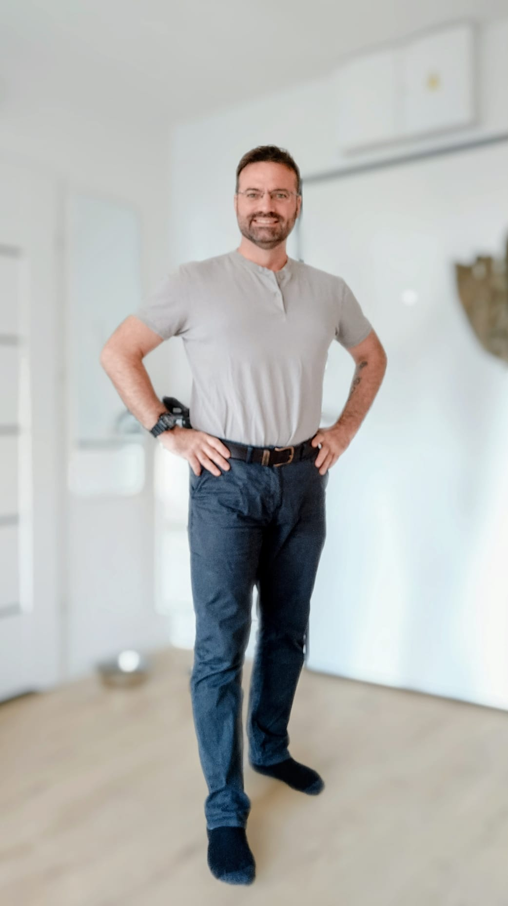

Qui suis-je ?
Je m’appelle Sébastien, formateur indépendant et spécialiste des environnements techniques depuis plus de 20 ans. Mon parcours mêle électricité, contrôle d’accès, vidéosurveillance, réseaux et systèmes informatiques, avec une forte culture terrain et une exigence de qualité dans chaque projet.
J’ai travaillé comme enseignant et formateur, puis ingénieur technique en électricité et IT. Ensuite je suis devenu spécialiste des systèmes de sécurité électronique (contrôle d’accès, CCTV, alarmes, réseaux). Cette expérience me permet de proposer des formations qui parlent le langage des techniciens, des installateurs, des bureaux d’études et des responsables techniques.
Mes domaines de spécialisation
- Électricité et basse tension
- Contrôle d’accès et vidéosurveillance
- Environnements IT et réseaux
- Intégration des systèmes techniques et numériques
Mes formations sont conçues pour être pragmatiques, structurées et directement applicables sur le terrain : études, installation, maintenance, diagnostic, mise en conformité, optimisation des systèmes. L’objectif est simple : rendre les professionnels plus autonomes, plus efficaces et plus à l’aise avec les technologies qu’ils utilisent au quotidien.
Retour à la page d’accueil